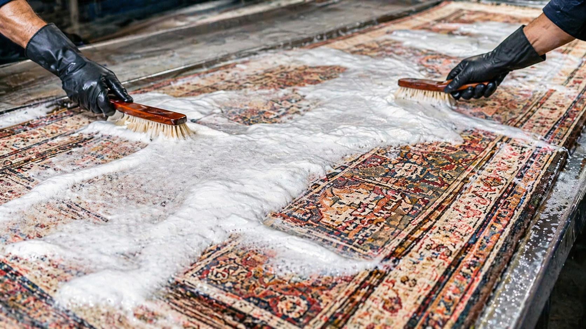
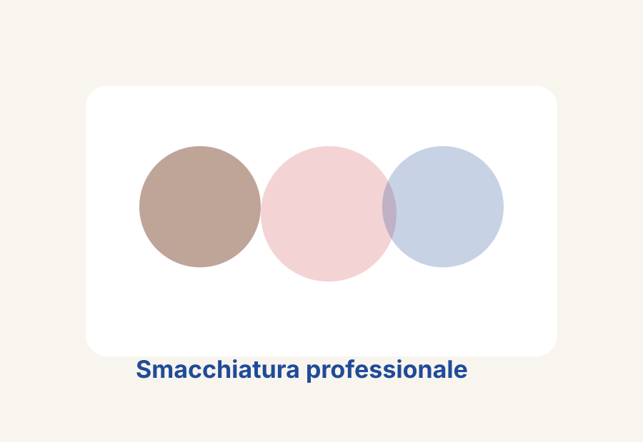
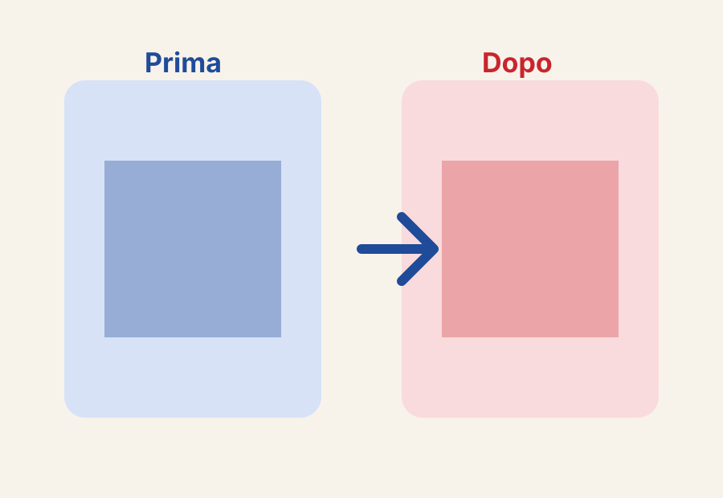
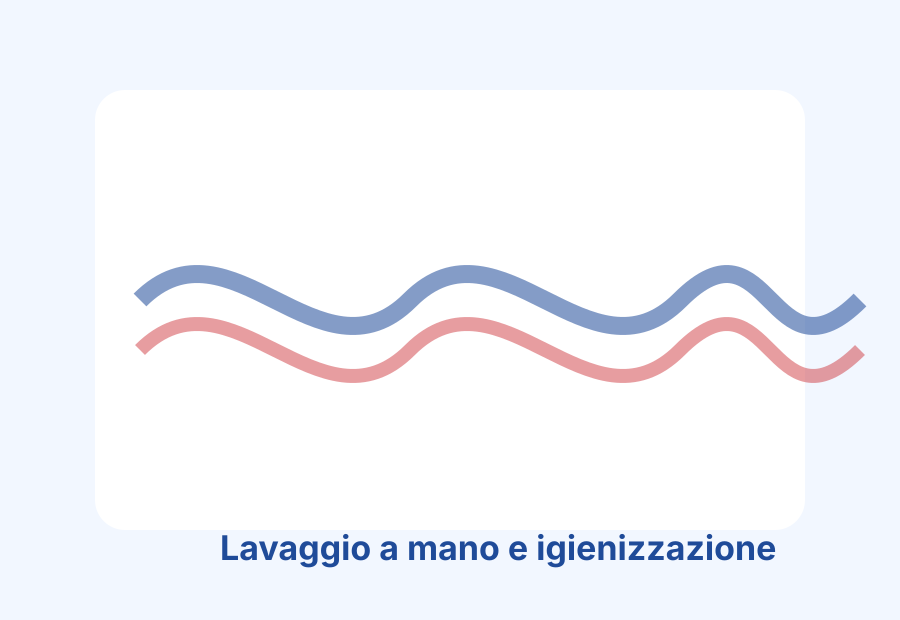

Lavaggio a mano
Interventi artigianali controllati per preservare struttura, morbidezza e colori.
Lavaggio tappeti Milano • Restauro tappeti Milano
Pulizia a mano, trattamenti su misura e restauro artigianale per tappeti moderni, antichi, persiani e orientali.

Ogni tappeto viene valutato prima del trattamento: materiale, età, stato delle fibre e tipo di colore. In questo modo possiamo scegliere lavaggio, restauro e trattamenti realmente adatti al tuo tappeto, senza procedure standard uguali per tutti.
Interventi artigianali controllati per preservare struttura, morbidezza e colori.
Protocollo conservativo per tappeti persiani, orientali e da collezione.
Ripristino frange, bordi e parti usurate con attenzione ai dettagli originali.
Antitarme, deodorazione, disinfezione, smacchiatura e tintura mirata.
Analisi iniziale di materiali, nodi e condizioni.
Preparazione tecnica prima del lavaggio.
Intervento specifico in base alla tipologia del tappeto.
Fase di finitura con verifica finale.
Ritiro in laboratorio o consegna concordata.
Pulizia tappeti Milano con lavaggio manuale professionale.
Scopri di piùInterventi delicati per tappeti antichi, persiani e orientali.
Scopri di piùIgienizzazione profonda per tappeti moderni e contemporanei.
Scopri di piùRiparazioni artigianali di frange, bordi e zone usurate.
Scopri di piùTrattamenti mirati per macchie difficili e scolorimenti.
Scopri di piùAntitarme, deodorazione e disinfezione professionale.
Scopri di piùValutazione media 4.9/5 su Google · +500 recensioni
"Servizio molto professionale, il tappeto è tornato brillante e pulito."
Recensione Google (esempio)"Comunicazione rapida su WhatsApp e lavorazione accurata."
Recensione Google (esempio)"Ottimo laboratorio a Milano, consigliato per tappeti antichi."
Recensione Google (esempio)


Tehran Lavaggio S.a.s · Via Tito Livio 20, 20137 Milano · Tel. 0255184111 · WhatsApp 3291777893 · info@tehran-lavaggio.it
Dipende da misure, materiale e condizioni. Scrivici su WhatsApp per una stima iniziale.
Sì, con tecniche di lavaggio a mano dedicate a tappeti antichi, persiani e orientali.
Certo, al numero 3291777893.
In media da pochi giorni a una settimana in base al trattamento.
Sì, eseguiamo interventi artigianali di restauro.
Sì, con servizi di smacchiatura, deodorazione e anti-tarme.
In Via Tito Livio 20, 20137 Milano.
Sì, il lavaggio è manuale e calibrato al tipo di tappeto.